SPECIALIZATION 1 ASSIGNMENT 2 DOCUMENT
TEAM COVER PAGE
Your group name: Không Ủ Tê
Group members’ names:
- Nguyen Ho Thai Anh-s4052244
- Nguyen Ngoc Tam-s3980446
- Ha Ngoc Minh Thu-s3980635
Course code, name, and time: COMM2654, Digital Media Specialization, Semester A 2026
Complete affiliation: RMIT University Vietnam, Saigon South Campus, School of Communication and Design, Digital Media Program
Current date: 22/5/2026
TEAM TOPIC
Complete SDG (number and description from the UN)
SDG 15-Life On Land: Protect, restore and promote sustainable use of terrestrial ecosystems, sustainably manage forests, combat desertification, and halt and reverse land degradation and halt biodiversity loss.
Complete quote
“If we don't have a place for nature in our heart, how can we expect nature to have a place for us.” (Naskar 2021)
A paragraph connecting the quote to the SDG with a call to action
Caring for the Earth is not only a policy goal but also a human responsibility. SDG 15: Life on Land calls on us to protect forests, restore ecosystems, and halt biodiversity loss (UN n.d.), yet this mission can only truly matter when we feel connected to the living world around us. As Naskar (2021) writes, “If we don't have a place for nature in our heart, how can we expect nature to have a place for us.” This quote reminds us that nature can only survive in our world when it first exists in our values, choices, and everyday spaces. Give ecosystems a place in your heart by making room for them in your everyday living space.
Background research
Idea: Urbanization is one of the reasons for terrestrial ecosystem downgrading (Barry 2014). We can't avoid urbanization, but can avoid its destruction just by small actions in our daily life. And by fighting city development consequences, we are leaving more spaces for the ecosystem to cycle and be alive along with us. . Treatment: Each person in the team will develop an aspect of keeping the ecosystem in cities with the idea of 'small action-big impact’ focusing on doable acts that everyone can do to contribute to the big goal.
Target audience: Vietnamese Gen Z living in big cities
Name of project: CITYBORNE
The inspiration for this name is the term “airborne diseases”, which means diseases that spread through air. In a similar way, CITYBORNE captures the idea that cities themselves can carry, transmit, and amplify challenges, especially environmental issues.
Question
How can we persuade people to take action for a better environment through storytelling, generativity and interactivity?
Style guide
Moodboard: This is the art-style we are aiming to achieve
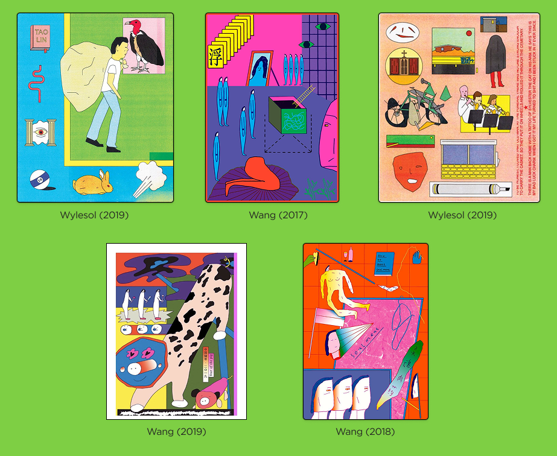
Art-style rationale: We believe using a style with a combination of colorfulness with free-style line-arts will be eye-catching to our target audience, as there have been successful cases on attract young customers using bright and colorful style in branding, for example are Oatside and Vinamilk (Luong 2024, One Republic n.d.)
Color palette: based on our style, we opt for a bright and colorful palette, with 2 different variations for the “good side” and the “bad side”
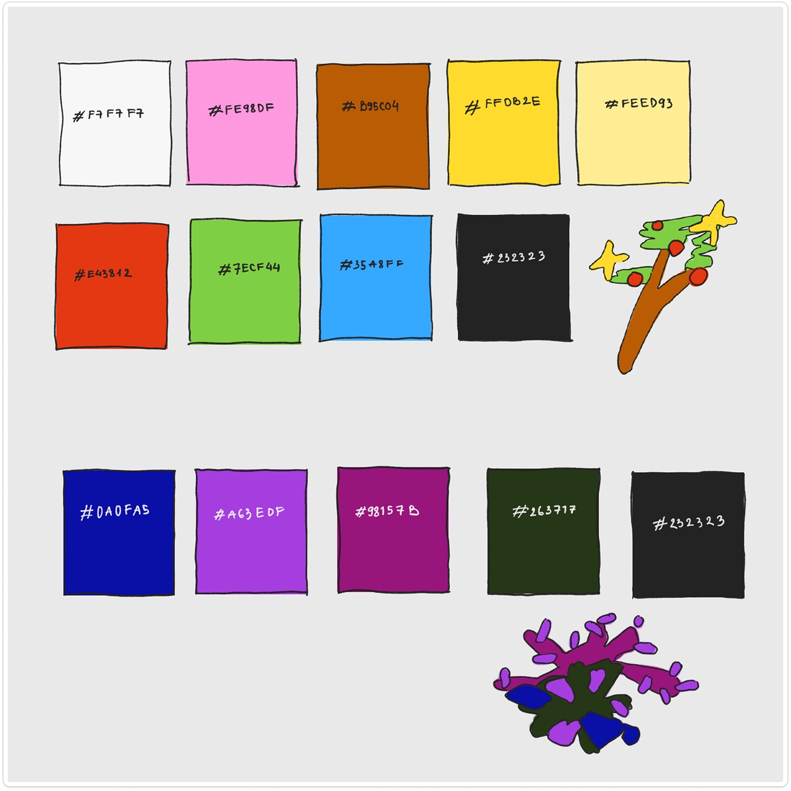
Font: For the font, we believe it is more suitable if we make use of handwriting fonts. Currently, we decided to have the MyUglyHandwriting font as title and subtitle, Handwriting font as paragraph. The size for each is: title 230px, subtitle 96px and paragraph 24px. Below are the images of the two fonts we chose and a mock up we did for better visualization.
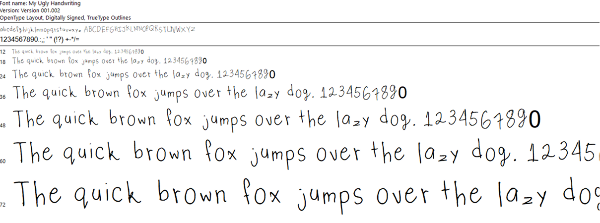
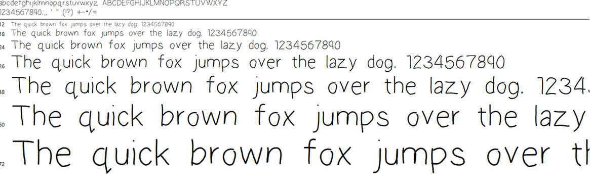
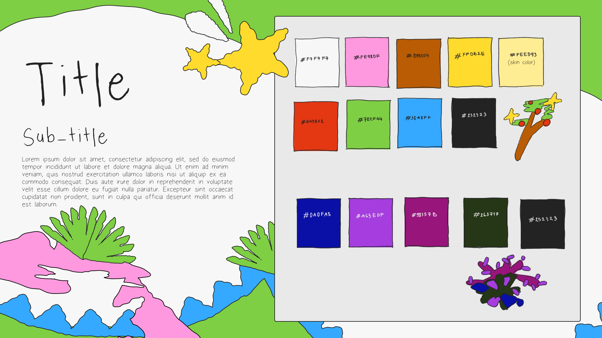
Logo: based on our style guide, we decided to make a hand-drawn logo, using smokes to shape the city silhouette.
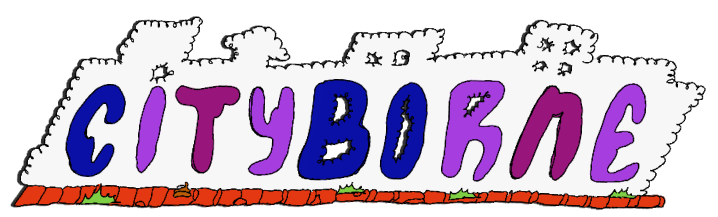
Core concept: We want to visualize the core of these problems by depicting ecosystem problems at the microscopic level instead of understanding it at the surface level. Not because of the air, but because of the solid particles and liquid droplets in the air. Not because of the noise, but because of its effect on livings, etc.
Webpage design
This is the full design of our webpage, re-using our own assets from the generative artworks. We made use of other libraries such as matter.js and motion.js for the webpage, as well as p5.js for some generativity. We believed making use of generativity outside of main artworks would make the page fun and attractive to users and keep them exploring.
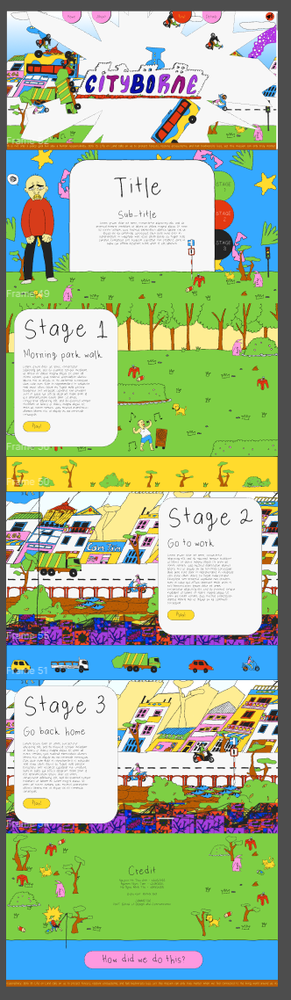
We also made background music only for the web to create the mood. However, we do not want to include background music into the generative works as we prefer emphasizing the city noises.
STAGE 1
Student name:
Nguyen Ngoc Tam - s3980446
Project title:
CITYBORNE - Morning Park Walk
Abstract:
Around us, the city never sleeps: its constant hum of traffic, construction, factories, and nightlife presses against our senses. Noise is not just background; it is a force that shapes how we feel, think, and live. Through this stage, users will experience the irritation of sound pollution through sound design, interaction and generation.
Creative practice:
Individual sketches
Imagine waking up in the morning with a headache so painful that it’s hard to describe. Around us, there is constant noise from people’s daily activities, traffic, and factories. Humans and even animals can create noise that affects others badly. I drew inspiration from my current location, Tan Binh District. As it is situated near the airport, the area is characterized by numerous outdoor bars, ongoing construction sites, and persistent traffic congestion, all of which contribute to a noticeable level of noise pollution.
Frequent headaches caused by everyday noise remain an unavoidable issue, particularly when there is little one can do to reduce its volume. Therefore, I depict this man as being surrounded by noise wherever he goes.
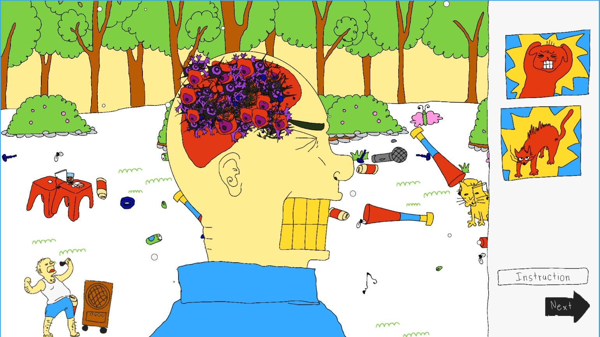
In fact, noise pollution affects both humans and animals. By placing him in a park, where various activities take place and anything can happen, I aim to emphasize the man’s persistent discomfort and headache caused by the surrounding noise. I use bacterial-like assets focusing around the man’s head, highlighting his grimacing, uncomfortable facial expression. I used Nam’s sense of discomfort to make the audience notice and feel that discomfort as well. So instead of avoiding discomfort, this idea uses uncomfortable and irritating feelings to make people realize when they are disturbing others. By seeing how stress and noise can affect both people and animals, they may become more aware and lower their own volume, trying not to bother everyone around them.
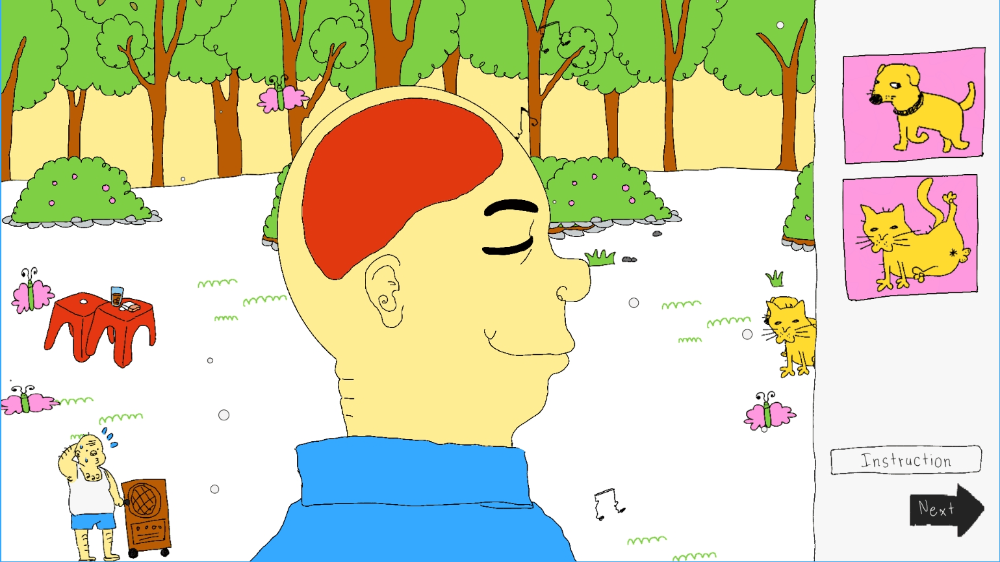
Sound design process
I used the website Jfxr~, operated by frozenfractal, to generate some synth sounds. It was easy to use and could produce a wide variety of sounds for the clicking sound. I also recorded the remaining sounds in a pretty random and accidental way. Most of them were recorded around my neighborhood.
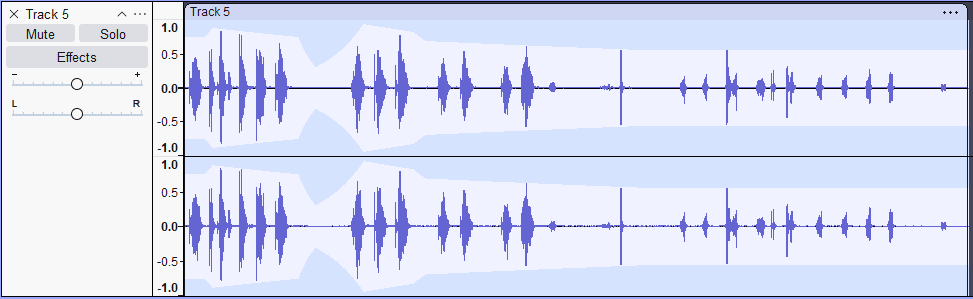
First, the karaoke sound came from my neighbor singing outside. The traffic noise was recorded around Cong Hoa Street — that area is always crowded with traffic, so honestly I did not have much difficulty capturing those sounds. As for the bar music, it came from a place called Lộ Thiên. On weekend nights they go absolutely crazy with loud music and partying, so I just waited for the right time and recorded it.
I used these sounds to express the irritation and constant headache experienced by the main character. If you pay attention, you can also hear cat sounds in the project. One day my cat happened to have a hoarse voice, so I took the opportunity to record that as well.
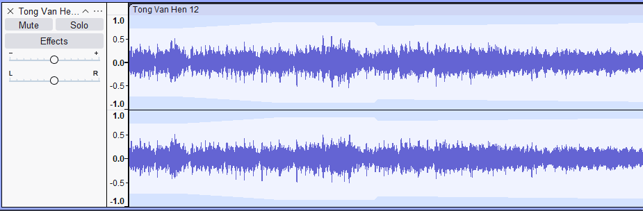
After that, I edited all of the audio in Audacity — mostly cutting and arranging clips, adjusting volume levels, reducing background noise, and layering multiple sounds together to create a more chaotic atmosphere. I also experimented with effects like distortion, echo, and reverb to make the audio feel more overwhelming and uncomfortable, which matched the feeling I wanted to communicate through the project. Then, in Audacity, I reduced noise, experimented with speed and pitch, and layered the sounds together until I achieved the effect I wanted.
P5js experiment code
There were not many major changes compared to A2. I mainly added more interaction to the website so it would better match my original idea and concept.
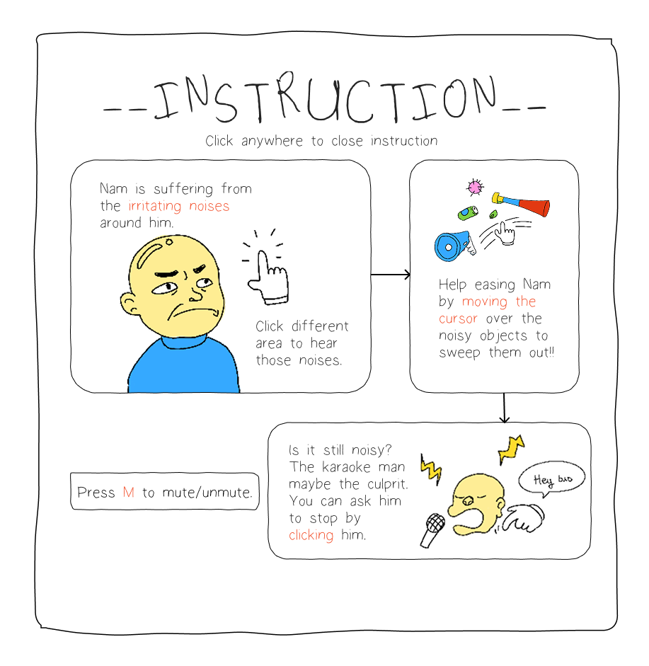
I also want to give my sincere thanks to Thai Anh for helping me reorganize and fix the code, making everything run much more smoothly. She also helped implement a cleaning effect by reducing the opacity of objects, making them gradually disappear from the screen completely.class ColaCan {
constructor(x, y, img) {
this.homePos = createVector(x, y);
this.currentPos = createVector(x, y);
this.vel = createVector(0, 0);
update() {
let mousePos = createVector(mouseX, mouseY);
let distToMouse = p5.Vector.dist(this.currentPos, mousePos);
if (distToMouse < this.threshold) {
let away = p5.Vector.sub(this.currentPos, mousePos);
away.setMag(2);
this.vel.lerp(away, 0.3);
this.targetOpacity = 0;
} else {
let back = createVector(0, 0);
this.vel.mult(0);
}
//opacity change
this.opacity = lerp(this.opacity, this.targetOpacity, 0.03);
//velocity add
this.currentPos.add(this.vel);
}
}
And here is the code for adding sound — the karaoke man will keep singing continuously until the user clicks on him, which makes him finally stop singing.
//KARAOKE TRIGGER
if (interactiveKaraokeObject) {
let wasAssetClicked = interactiveKaraokeObject.checkClick(mouseX, mouseY);
if (wasAssetClicked) {
//if clicked the karaoke man, mute karaoke and bar
if (sounds[5] && sounds[5].isPlaying()) sounds[5].setVolume(0);
if (sounds[6] && sounds[6].isPlaying()) sounds[6].setVolume(0);
return; // Stop processing column hits so sounds don't start playing again!
}
}
And here is the code for adding background sounds — clicking around different areas of the screen will trigger different regional sounds.
//BACKGROUND SOUNDS-------
if (sounds[5] && sounds[5].isPlaying()) sounds[5].stop();
if (sounds[6] && sounds[6].isPlaying()) sounds[6].stop();
if (sounds[7] && sounds[7].isPlaying()) sounds[7].stop();
STAGE 2
Student name:
Ha Ngoc Minh Thu - s398035
Project title:
CITYBORNE - Go To Work
Abstract:
This project is an interactive digital experience created using p5.js to raise awareness about pollution caused by fuel vehicles. Through animation, sound, and interaction design, users experience an uncomfortable city environment where pollution affects both nature and human health.
Users can interact with the scene by transforming fuel vehicles into electric alternatives, symbolizing cleaner transportation choices for a healthier future.
Background research:
Air pollution is a serious issue in large urban areas, especially in Ho Chi Minh City (Phan Anh, 2025). It not only reduces the quality of life for residents, but is also associated with major health risks, including respiratory illness and disorders affecting the reproductive, neurological, and immune systems (National Institute of Environmental Health Sciences, n.d.). Its impact on plants can also be highly damaging, as harmful particles in the air interfere with the health and survival of vegetation (Agriculture, Environment and Rural Affairs, n.d.).
The idea comes from my personal experience. When I lived in my hometown, the air quality was much cleaner and healthier for me. However, after moving to university, which is in a big city, my immune system became weaker, and I started having more respiratory problems that became harder to recover from over time. In particular, my rental apartment is located in Thu Thiem District, an area with heavy pollution due to its proximity to industrial zones and constant traffic. (Chí Nhân 2025).
One effective way to reduce air pollution is by using electric vehicles, as the growing number of personal vehicles, especially gasoline-powered motorbikes, continues to place greater pressure on air quality. (Đức Vân, 2026).
Creative practice:
Evidence ideation:
At first, I wanted to include many different causes of air pollution in the project. However, the scope became too large and difficult to manage, so I decided to narrow the focus and concentrate mainly on pollution caused by vehicles.
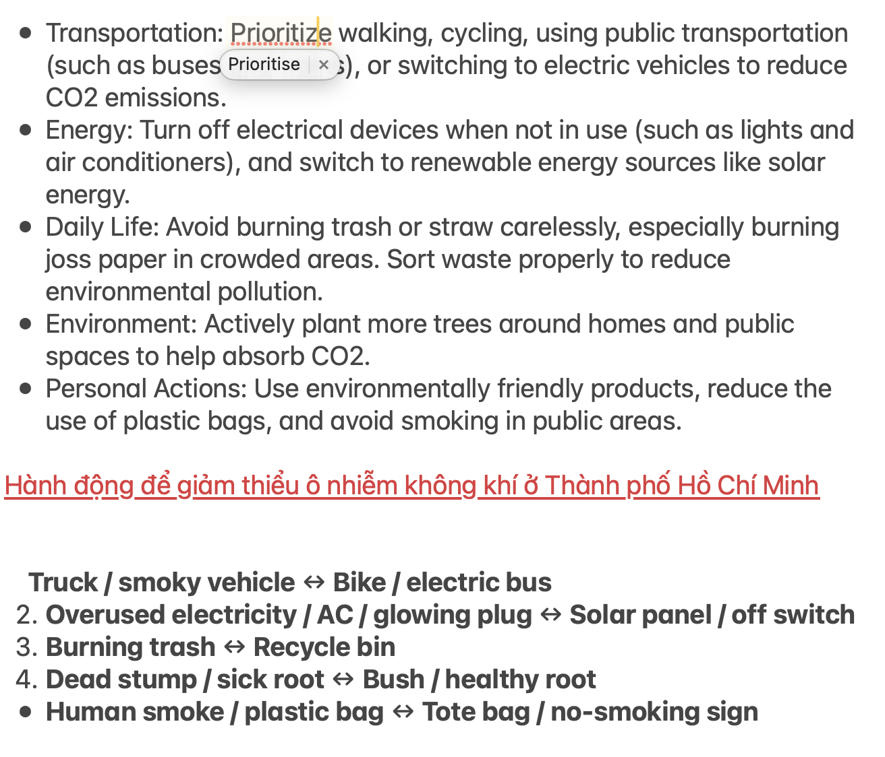
This is my final idea, including the layouts, visual assets, and animation plans for the project. I plan to reuse as many as assets in A2 to save time.
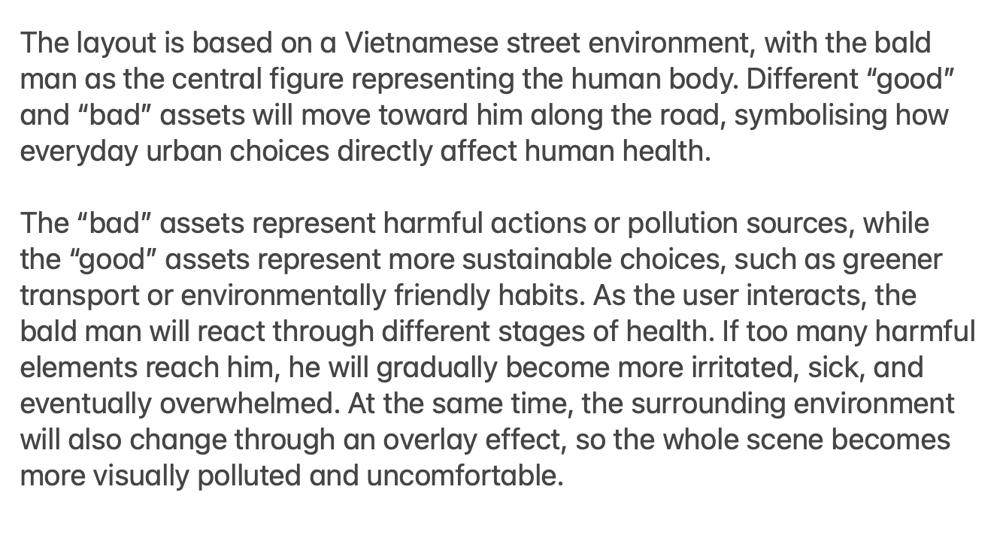
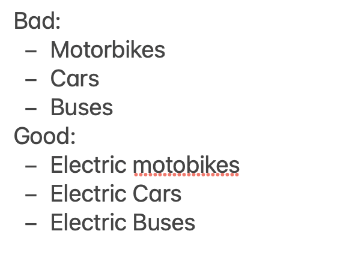
Evidence iteration:
This is my first draft
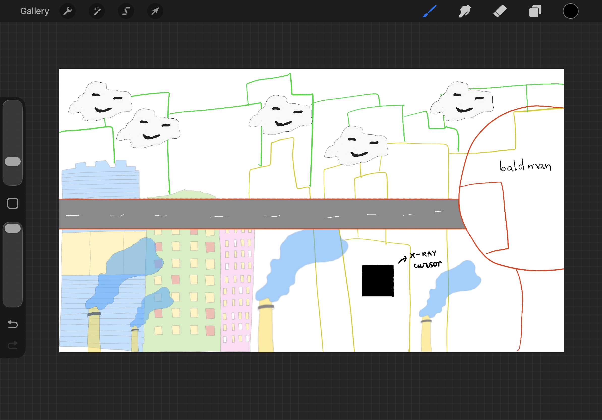
My fuel vehicles did not have any visual indicators showing that they were fuel-powered.
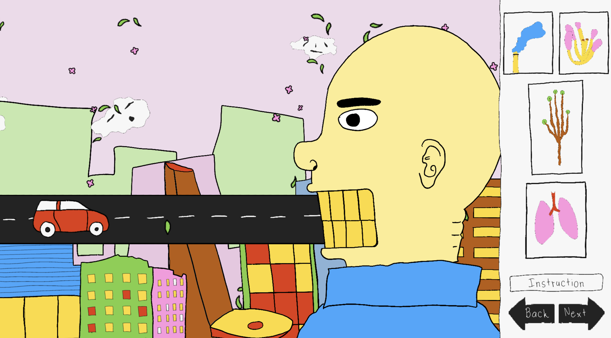
For the interaction that transforms vehicles into electric vehicles, I only added a simple “Change” button at the bottom because I did not have enough time to fully design and develop the interaction before the consultation session.
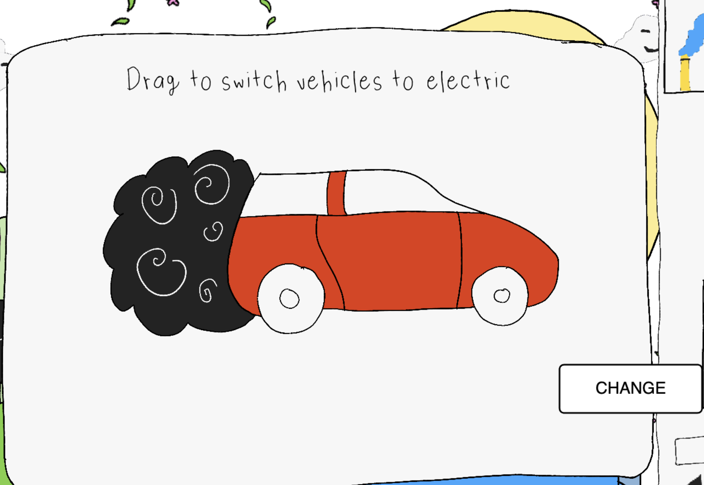
In this final iteration, I improved the visual communication of the vehicles by adding smoke effects to fuel-powered vehicles and flowers and leaves to electric vehicles, helping users clearly understand which choices are harmful and which are environmentally friendly. I also changed the simple transformation button into a drag slider interaction with bacterial visuals. As users drag the slider, the fuel vehicle transforms into an electric vehicle while the bacteria gradually disappear, symbolizing the reduction of pollution.
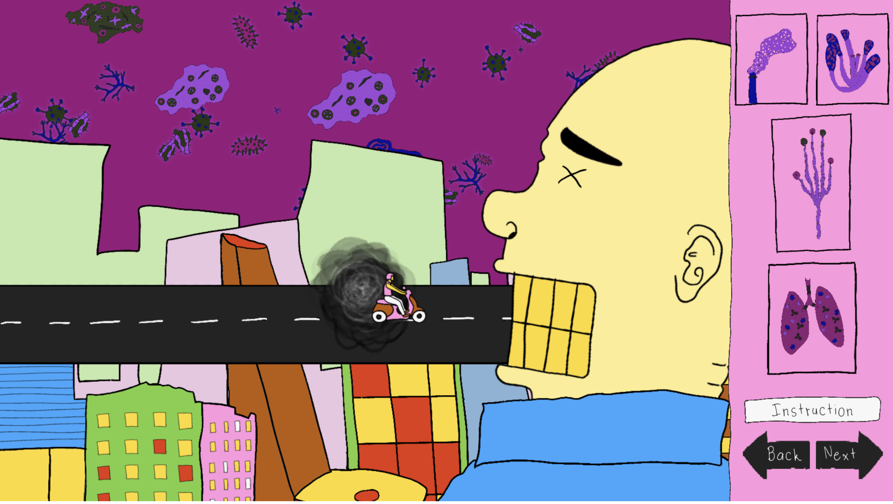
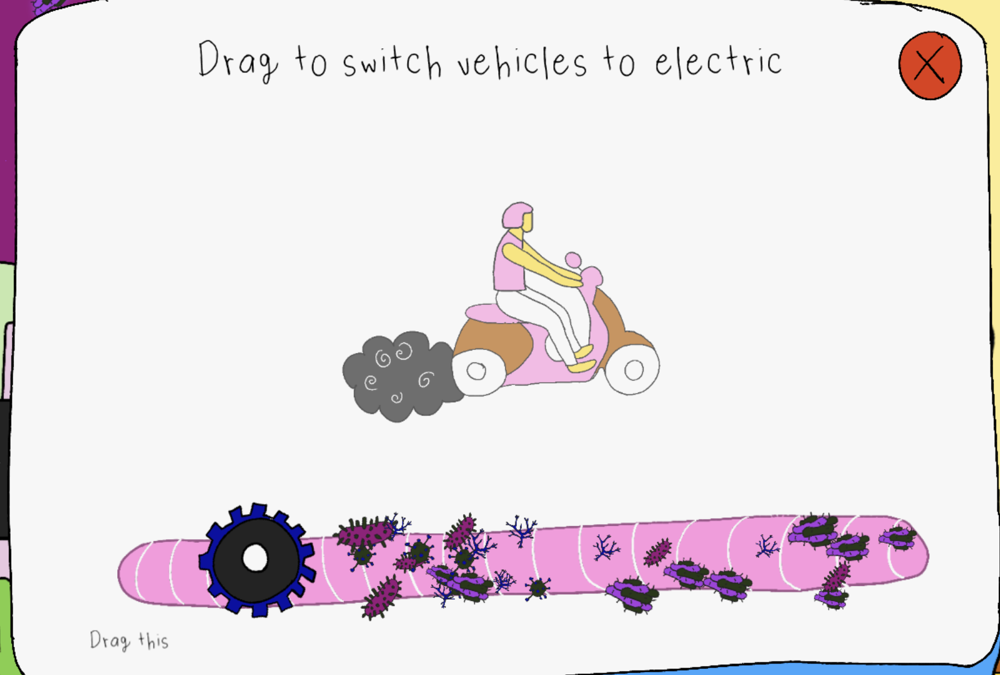
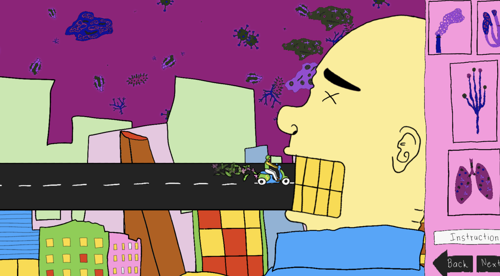
Sounds:
For the honking sounds, I recorded the audio from my own motorbike in the basement, then adjusted the pitch and tempo to create different honking sounds for the bus and car, since recording them outside would have been too loud and noisy. I used these sounds as hover effects, so whenever users hover over a bike, car, or bus, a different sound plays depending on the type of vehicle.
For the background noise ambience, I simply recorded the sound outside my balcony to create a more realistic city atmosphere.
I also created the hitHurt sounds using jsfxr for the bald man character when he suffers from pollution. I changed the pitch and tempo of the sounds to make his voice feel heavier and more painful as he reaches worse pollution states.
Discussion:
My creative process has improved a lot compared to the previous assignment. I communicated and exchanged ideas with my teammates more often to make sure we were on the same page throughout the project. I also spent more time improving my code based on feedback from my lecturer and focused more on enhancing user interaction through continuous iteration and refinement.
STAGE 3
Student name:
Nguyen Ho Thai Anh - s4052244
Project title:
CITYBORNE - Go Back Home
Abstract:
This project aims to persuade people to take action through showing how a polluted canal can lead to land degradation and affect urban ecosystems, including decrease in living quality. This project is an improvement from A1, even though it changed significantly, mostly everything is adapted from previous experiments.
Background research:
Urban flooding in Vietnam’s big cities is a growing problem, often caused by clogged drainage systems that become polluted and unhygienic due to littering. These drainage ditches play a vital role in keeping cities safe from excess water (Le et al. 2025), yet when blocked, their flood not only create smelly and unhealthy conditions for residents (Nguyen et al. 2023) but also damage local ecosystems and contribute to land degradation (Zhang et al., 2024). Each person can make a difference by simply avoiding the habit of throwing trash into drainage areas, helping to keep the system clear and functional. Preventing floods is not just about infrastructure, it’s about collective responsibility and everyday actions that protect both communities and the environment.
Creative practice:
When doing ideation from scratch, I feel like it’s better to write it down and follow the thought flow. Here are my first notes about ideation:
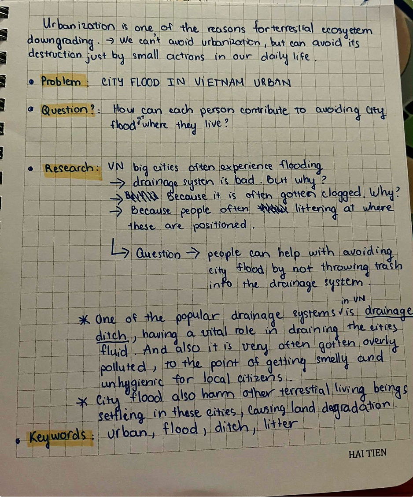
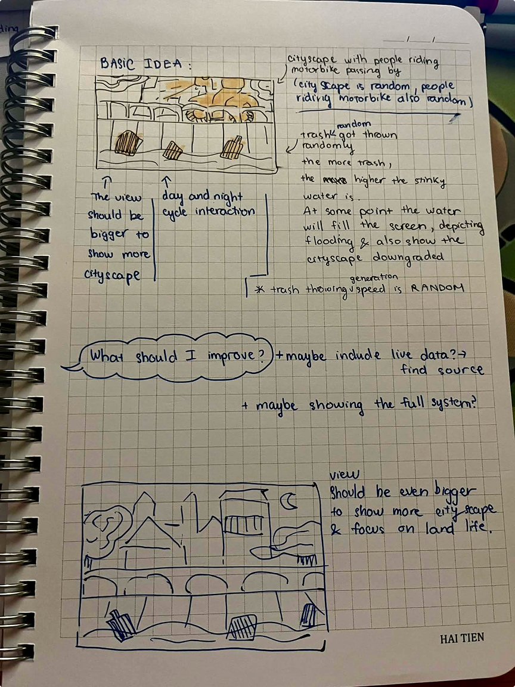
However, I later thought it was too literal and boring. So me and my team decided to re-work on the concept. I suggested an idea of making pollution as monsters aiming to invade the city and when we fed on them, they would grow and eventually fill the city, but it was scrapped because we found that idea was too negative and could lead to fear motivation, which means people do it because they are scared. As I researched, fear motivation could lead to intrusive thoughts (Bakac and Kehr 2023) and even worsen mental health (Knowledge at Wharton 2018), and of course we would not really want that.
One of the teammates also stated that the monster idea was feeling like we were saying humans are monsters. That made me think, so what if we narrow the problem down to microscopical level? It was not like everyone had the chance to see those microscopicals, but we all knew they were there and they were the core of everything: our health, our living conditions, etc. Using that concept could trigger their brain to imagine. And we then all agreed on that.
Here is my improved idea:
I took the visual inspiration from the Te canal in district 7 HCMC, where it often gets flooded every time a high tide happens (Anh Bao 2025).
Instead of a realistic illustration of trash in the canal, I want to depict it as bacterial particles, following the team's style guide.
Instead of showing the actual action, I want to focus on the thoughts, which directly drive the action (littering into the canal). Each click on the falling thoughts will tear it, and as each thought is eliminated, the bacteria in the canal appears less. This idea is to encourage people to aware about the popular thoughts about litter that they, or people they know, might have, and that those thoughts are not appropriate and could lead to actual action.(spacing) Despite not directly mentioning littering, also do not leave out the visualization for actual rubbish, since it is the main cause of canal clogging (Ngoc Quynh 2026). The litter is accessed through the fishing man.
I also want to include the busyness and a huge amount of residency (lots of houses and vehicles moving) in order to show that this is a big city, as urban living reduces biodiversity awareness (Nguyen et al. 2023).
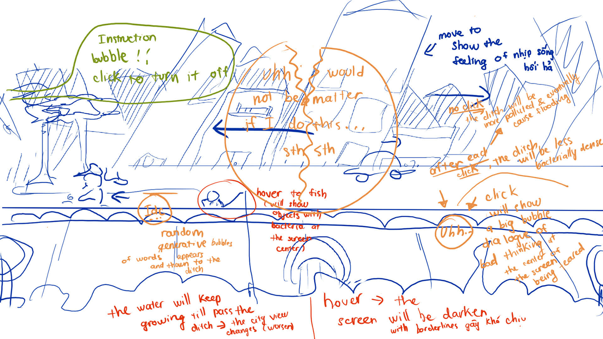
The flow chart helped me plan out the generation and interaction for the art, however some of the additional elements I added later was not planned out in there (like the sidebar)
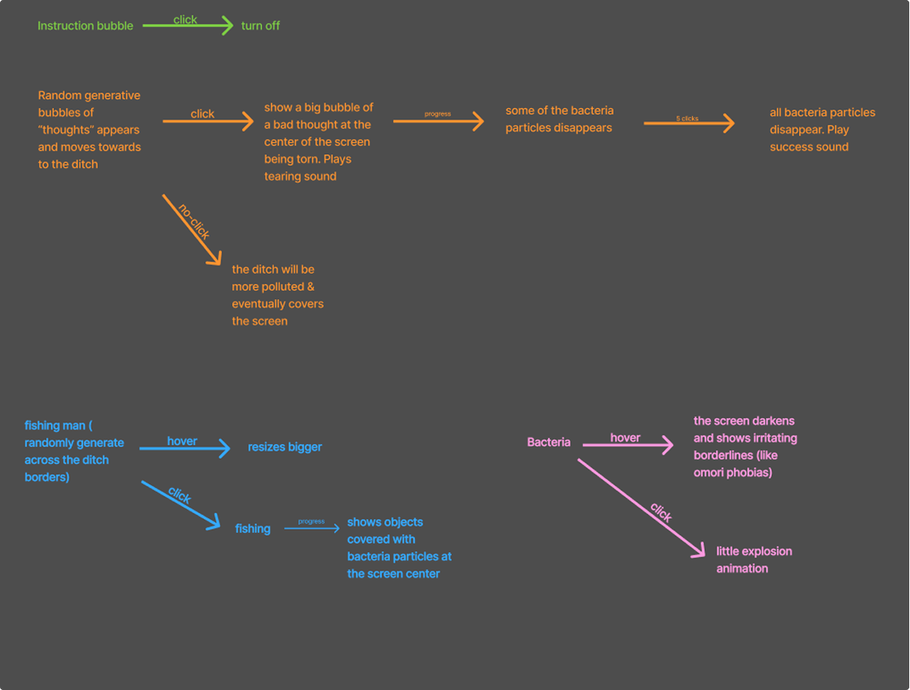
I drew the assets on Procreate to make it at the right scale when put next to each other, then exported to figma to edit and compose demos in advance.
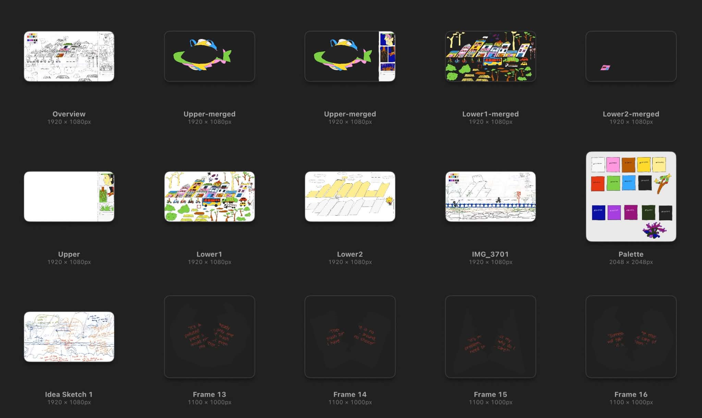
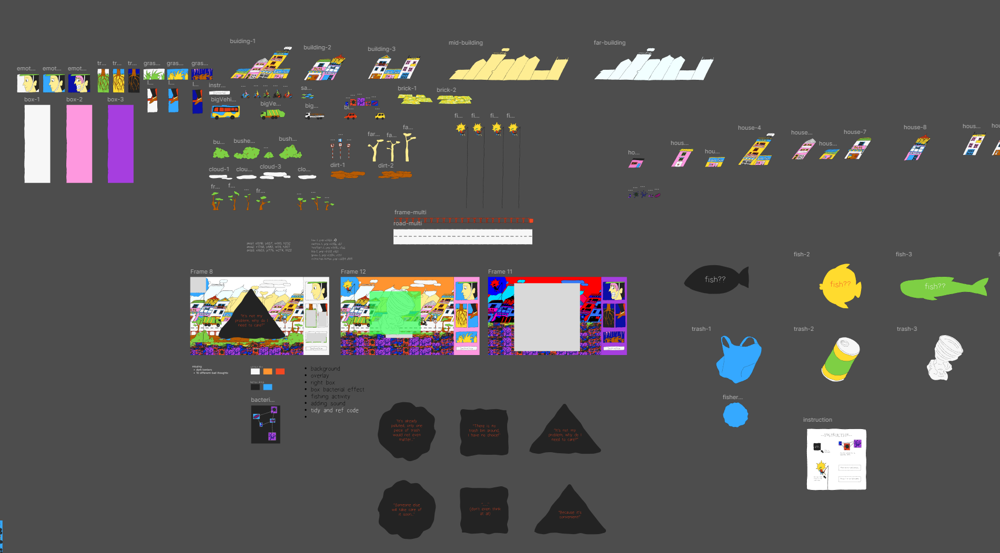
Code-wise:
I tried to make use of my old code in A1 as much as possible. In this new one, I applied the parallax, drift away interaction and the way to execute conditionals which I have learned in A1. I also learned from a classmate’s code (not in my team) a way to comment effectively, and that technique helped me a lot in navigating my code and it was a lot quicker to spot the bugs when things didn't work out. Before this class, I was kind of lazy to comment because I thought it would slow me down, but eventually it’s actually the opposite!
I mostly make use of class to make the logic for the generativity, especially using currentGrowthY from bacteria network class, which drives mostly everything in the scene through stages. My project (and my team’s also) is pretty graphic-heavy, mine alone has more than 100 visual assets. However, by using splice() to delete anything off-screen and optimize any repetitive assets, I did not experience any lagging issues even on the school's computer.
Sounds:
For the ambience sound, I preferred recording from real streets with minimal editing to make the environment feel “city” and “busy” just as how it is.
However, there are some sounds that are a little more abstract, such as bacterial sound. No one actually knows how they sound, so I tried to compose it based on 2 keywords: metallic and slimy. Metallic because anything metal feels very modern (since our project takes place in a big city) and slimy because I believed anything dirty would feel even dirtier when it’s wet.
I am also the one who made the background music for the web (with a lot of instruction from my producer friend. Also a big thanks to that friend for letting me borrow his laptop for FL Studio!). I wanted to make the music user-friendly to benefit the UX, while still achieving the feeling of irritation. To be honest, listening to that music on loop for about 5 times up caused me a headache (and also my teammate too, she was my beta listener).
Final canvas:
This is my final canvas state with 3 phases of flooding, based on the ideation previously with alterations to better support my idea.
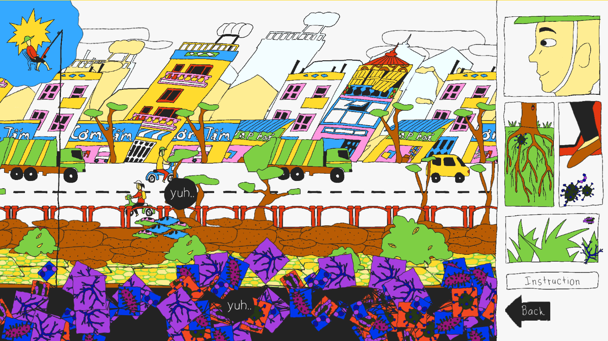
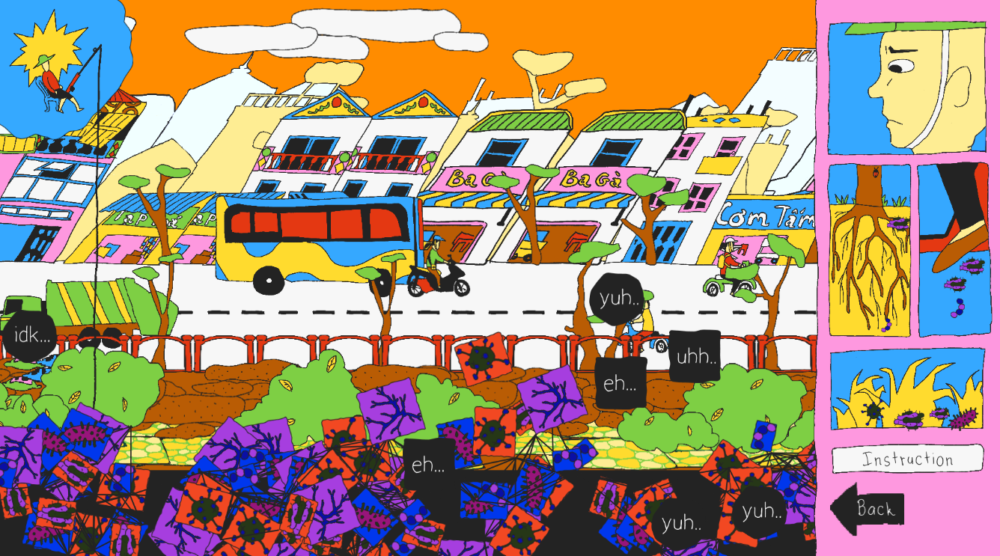
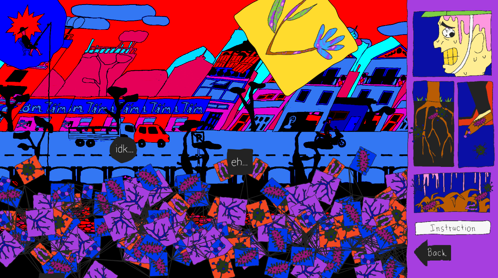
REFERENCES
ÁNH BẢO (7 October 2025) ‘Nước từ kênh Tẻ tràn vào đường Trần Xuân Soạn, người dân TPHCM bì bõm giờ tan tầm’, Lao Động, accessed 21 April 2026. https://laodong.vn/ban-tin/nuoc-tu-kenh-te-tran-vao-duong-tran-xuan-soan-nguoi-dan-tphcm-bi-bom-gio-tan-tam-1587724.ldo
Agriculture, Environment and Rural Affairs (n.d.) ‘Effects of air pollution on natural ecosystems’, Agriculture, Environment and Rural Affairs, accessed 16th April 2026. https://www.daera-ni.gov.uk/topics/effects-air-pollution-natural-ecosystems
Barry G (2014) ‘Terrestrial ecosystem loss and biosphere collapse’, Management of Environmental Quality: An International Journal, 25(5):542-556, doi:10.1108/MEQ-06-2013-0069.
Bakac C and Kehr MH (2023) ‘Unpacking the Relationship between Fear Motives and Self-Control Strategies among Managers: The Mediating Role of Intrusive Thoughts’, Behavioral sciences, 13(5):384, doi:10.3390/bs13050384
Biddle, JS 2025, How noise pollution quietly affects your health, Center for Occupational and Environmental Health.
Chí N (21 December 2025) ‘Sáng nay, bầu trời TP.HCM lại mù mịt, ô nhiễm không khí mức nào?’, Thanh Niên, accessed 15th April 2026.https://thanhnien.vn/sang-nay-bau-troi-tphcm-lai-mu-mit-o-nhiem-khong-khi-muc-nao-185251220082418276.htm
Đức Vân (16 January 2026), ‘Phương tiện xanh để giảm ô nhiễm không khí’, Lao Động, accessed 26th April 2026. https://laodong.vn/xa-hoi/phuong-tien-xanh-de-giam-o-nhiem-khong-khi-1641430.ldo
Jenna, B 2026, Noise Pollution Effects on Pets: How Everyday Sounds Are Impacting Pet Health - Pet Insurance Review, Pet Insurance Review.
Jerry A. Nathanson & Richard E. Berg 2025, noise pollution, Youtu.be, viewed 7 November 2025, https://youtu.be/bfSX9enm6A8?si=jlc1JkGuaOiGtX4Z.
Knowledge at Wharton (2018) Does Fear Motivate Workers — or Make Things Worse?, Knowledge at Wharton website, accessed 23 April 2026. https://knowledge.wharton.upenn.edu/podcast/knowledge-at-wharton-podcast/fear-motivate-workers-make-things-worse/ Kandou H (2021) My Ugly Handwriting, Dafont website, accessed 23 May 2026. https://www.dafont.com/my-ugly-handwriting.font?fbclid=IwY2xjawRKAPFleHRuA2FlbQIxMABicmlkETFwU2hLTTBEMlV6VHF0cEVJc3J0YwZhcHBfaWQQMjIyMDM5MTc4ODIwMDg5MgABHhnoekgZm9FjqFunu5ms_WSzcVp7MKy_OUNjFJpQygacsdzgp5wIoFHFnZmF_aem_zAysNGaBHR1fsVwe9zrP6g
Lee, M. & Warhol, Tom 2024, Noise Pollution: Overview | EBSCO, EBSCO Information Services, Inc. | www.ebsco.com.
Naskar A (2021) When Veins Ignite: Either Integration or Degradation, Naskarism Publishing, India.
Ngọc Quỳnh (7 January 2026) ‘Kênh rạch tắc nghẽn vì rác và cỏ dại’, Thanh Niên, accessed 21 April 2026. https://thanhnien.vn/kenh-rach-tac-nghen-vi-rac-va-co-dai-185260106213743155.htm
National Institute of Environmental Health Sciences (n.d.) ‘Air Pollution and Your Health’, National Institute of Environmental Health Sciences, accessed 15th April 2026. https://www.niehs.nih.gov/health/topics/agents/air-pollution
Nguyen MH, Nguyen TMH, Jin R and Nguyen QL (2023) ‘Preventing the Separation of Urban Humans from Nature: The Impact of Pet and Plant Diversity on Biodiversity Loss Belief’, Urban Science, 7(2):46, doi:10.3390/urbansci7020046.
Nguyen MG (2023) ‘Những nguyên nhân chính tác động đến ngập Thành phố Hồ Chí Minh’, Vietnam Journal of Hydrometeorology, 3(747):21-36, doi:10.36335/VNJHM.2023(747).21-36.
One Republic (n.d.) A successful rebranding case of Vinamilk, One Republic website, accessed 21 April 2026. https://www.onerepublic.vn/en/case-study-a-successful-rebranding-case-of-vinamilk/
Paz J (2014) Handwriting, Dafont website, accessed 23 May 2026. https://www.dafont.com/handwriting-3.font?fbclid=IwY2xjawRXECZleHRuA2FlbQIxMABicmlkETFVcUlWbWZ6cHBaS09zOW8zc3J0YwZhcHBfaWQQMjIyMDM5MTc4ODIwMDg5MgABHv4jBxQ6cH1X_LgkK9xIx5ffY4KrgXRlY0qLXUs19lP7krSn-_YWZgKduOjb_aem_ZS8gVt8EMlTFb-MuIXMHfA
Phillips, JN, Termondt, SE & Francis, CD 2021, ‘Long-term noise pollution affects seedling recruitment and community composition, with negative effects persisting after removal’, Proceedings of the Royal Society B: Biological Sciences, vol. 288, no. 1948.
Phan A (13 December 2025) ‘Ho Chi Minh City ranks among world's 10 most polluted cities as air quality hits unhealthy levels Saturday’, VNExpress International, accessed 15th April 2026: https://e.vnexpress.net/news/news/environment/ho-chi-minhcity-ranks-among-world-s-10-most-polluted-cities-as-air-quality-hits-unhealthy-levels-saturday-4993492.htm
RMIT Renick (2026) 'p5js week 04: arrays and transformations' [coding], RMIT University, Saigon South. https://renickbell.net/doku.php?id=p5js-week-04 The Noise Pollution Clearinghouse 2024, About Noise and NPC, Nonoise.org.
Luong TN (2024) 4 chiến lược giúp Oatside trở thành “best seller” trong giới sữa hạt, Brands Vietnam website, accessed 21 April 2026. https://www.brandsvietnam.com/congdong/topic/344183-4-chien-luoc-giup-oatside-tro-thanh-best-seller-trong-gioi-sua-hat
Le TMT, Nguyen TT, Nguyen TA, Nguyen THT and Nguyen PD (2025) ‘Water Quality Assessment of Urban Canals in Ho Chi Minh City, Vietnam: Effectiveness of Renovation Efforts in Minimizing Pollution’, Journal of Water Management Modeling, 33(1):1-15, doi:10.14796/JWMM.S545.
UN (United Nations) (n.d.) Goal 15, UN website, accessed 21 April 2026. https://sdgs.un.org/goals/goal15
Wang R (2017) Meschugge Pics [illustration], artsy website, accessed 21 April 2026. https://www.artsy.net/artwork/ruohan-wang-wang-ruo-han-meschugge-pics
Wang R (2018) Soulmeat [illustration], Ruohanwang website, accessed 21 April 2026. https://ruohanwang.com/projects/soulmeat
Wang R (2019) Year of the Pig [illustration], Ruohanwang website, accessed 21 April 2026. https://ruohanwang.com/projects/year-of-the-pig
Wylesol G (2019) art skool cowboy [illustration], Wylesol tumblr website, accessed 21 April 2026. https://wylesol.tumblr.com/post/177912102961
Wylesol G (2019) OOGST [illustration], Wylesol website, accessed 21 April 2026. https://wylesol.com/#/oogst/
Zhang Y, Li Z, Xu H, Ge W, Qian H, Li J, Sun H, Zhang H and Jiao Y (2024) ‘Impact of floods on the environment: A review of indicators, influencing factors, and evaluation methods’, Science of The Total Environment, 951(1):175683, doi:10.1016/j.scitotenv.2024.175683.